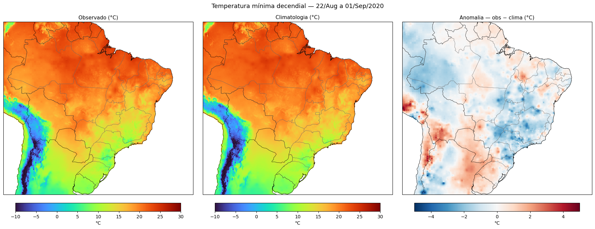
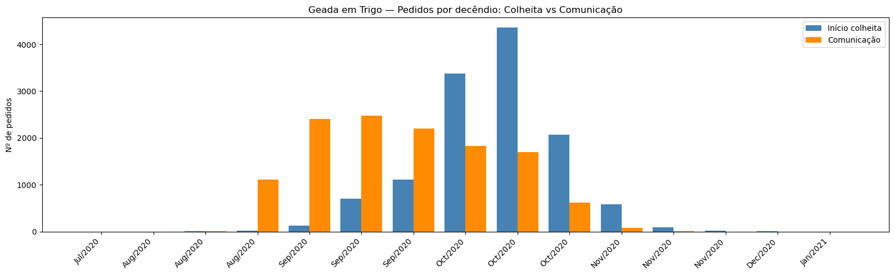
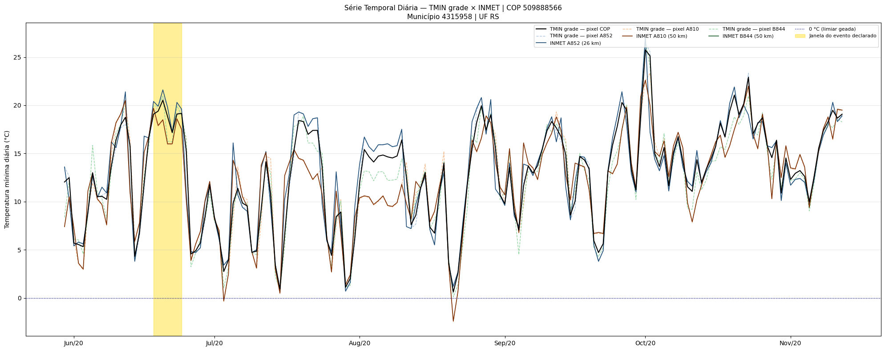
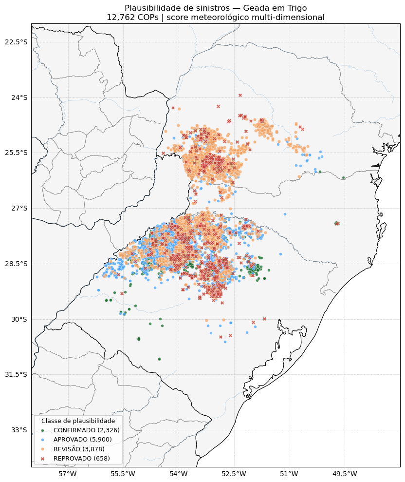

Aula 3 — plausibilidade meteorológica: geada em trigo
Esta aula fecha o trio Seca/Chuva/Geada das aulas 1 e 2. Aqui trabalhamos com temperatura mínima (TMIN do SAMeT/CPTEC) e damos um salto metodológico: além de flags binários, construímos um score multidimensional 0-100 e uma classificação operacional em quatro categorias.
Novidades em relação às aulas anteriores
Novidade |
Onde aparece |
|---|---|
TMIN como variável primária |
Passos 0.4, 4, 7, 8 |
FillValue não-padrão da climatologia SAMeT |
Passo 0.4 ( |
Mapa Folium interativo por COP suspeita |
Passo 10.5 |
Score 0-100 + 4 classes operacionais |
Passo 11 |
Métricas INMET paralelas com |
Passo 8 |
Passo 0 — carregamento e particularidades do SAMeT
ds_tmin = open_tmin(startdate, enddate).load()
doy_tmin = pd.to_datetime(ds_tmin.time).dayofyear
ds_tmin = ds_tmin.assign_coords(dayofyear=('time', doy_tmin.values))
ds_tmin_clima = (xr.open_mfdataset(f'{path_clima}/*TMIN*.nc',
combine='nested', concat_dim='time')
.load()
.sel(lon=slice(LON_MIN, LON_MAX),
lat=slice(LAT_MIN, LAT_MAX))
.sortby('time'))
# Tratamento do FillValue -999e6 — mascara valores absurdos
ds_tmin_clima['ttmin'] = ds_tmin_clima['ttmin'].where(
ds_tmin_clima['ttmin'] > -100
)
Aviso
A climatologia SAMeT (NetCDF) usa _FillValue = -999000000.0
— não é o -9999 típico e não é mascarada automaticamente
pelo xarray em todas as versões. Sem o .where(... > -100),
esses pixels contaminam médias e anomalias com números absurdos.
Agregação diária do INMET
Sem shift de 12 h (aquele era específico para chuva). Para TMIN, a
agregação é simplesmente o min() das 24 leituras horárias:
temp = df_inmet_raw[['COD', 'TMIN']].copy()
temp['DATA'] = temp.index.normalize()
df_inmet = (temp.groupby(['DATA', 'COD'])
.agg(TMIN=('TMIN', 'min'))
.reset_index())
Passo 1 — recorte: geada em trigo
startdate = dt.datetime.strptime('2020-04-01', '%Y-%m-%d')
enddate = dt.datetime.strptime('2021-04-01', '%Y-%m-%d')
geada_trigo = (df_sicor[
(df_sicor['nome_evento'] == 'Geada') &
(df_sicor['produto'] == 'trigo') &
(df_sicor['dt_inicio_plantio'] >= startdate) &
(df_sicor['dt_fim_colheita'] < enddate)
].sort_values(['ref_bacen', 'nu_ordem', 'nu_indice'])
.drop_duplicates(subset=['ref_bacen', 'nu_ordem'], keep='first')
.copy())
A safra de 2020 concentra a maior parte das COPs, em parte pelas geadas severas de agosto/setembro de 2020 no Sul.
🖼️ Imagem sugerida (IMG-TODO)
- Imagem ideal:
Foto de lavoura de trigo danificada por geada (folhas e espigas queimadas pelo frio, com coloração esbranquiçada/amarelada).
- Função:
ilustra o dano físico da geada no trigo — o evento que a aula avalia — conectando as geadas severas de 2020 ao impacto em campo.
- Busca sugerida:
“frost damage wheat crop”; “geada trigo lavoura dano”
- Fonte provável:
Embrapa, INMET, Wikimedia Commons
- Facilidade:
média
Passo 4 — mapa de três painéis para o decêndio-chave
TARGET_DATE = '2020-09-01'
DEC_INI = pd.Timestamp(TARGET_DATE) - dt.timedelta(days=10)
DEC_FIM = pd.Timestamp(TARGET_DATE)
obs_dec = ds_tmin.sel(time=slice(DEC_INI, DEC_FIM))['tmin'].mean('time')
clima_dec = (ds_tmin_clima['ttmin']
.sel(time=ds_tmin_clima.time.dt.dayofyear
.isin(range(DEC_INI.dayofyear, DEC_FIM.dayofyear + 1)))
.mean('time'))
anom_dec = obs_dec - clima_dec

Figura 75 - Decomposição visual do decêndio 22/08 → 01/09/2020. Observado
(esquerda) − Climatologia (centro) = Anomalia (direita).
turbo para valores absolutos, RdBu_r para anomalia:
azul = mais frio (compatível com geada), vermelho = mais
quente (suspeito).
Passos 5-8 — estações próximas + métricas paralelizadas
Idem aulas anteriores para o vínculo espacial (Haversine
vetorizado). A novidade está nas métricas INMET paralelizadas
com joblib:
def metricas_estacoes(row, df_inmet):
"""Métricas INMET das 3 estações mais próximas na janela do evento."""
d_ini, d_fim = row['dt_inicio_evento'], row['dt_fim_evento']
tmins, n_valid, n_abaixo_4 = [], 0, 0
for r in [1, 2, 3]:
cod = row[f'cod_estacao_{r}']
if pd.isna(cod): continue
serie = df_inmet[(df_inmet['COD'] == cod) &
(df_inmet['DATA'].between(d_ini, d_fim))]['TMIN']
if serie.notna().any():
n_valid += 1
tmins.extend(serie.dropna().tolist())
n_abaixo_4 += (serie <= 4).sum()
return {
'stn_tmin_mean': np.nanmean(tmins) if tmins else np.nan,
'stn_tmin_min': np.nanmin (tmins) if tmins else np.nan,
'stn_n_valid': n_valid,
'stn_n_abaixo_4': n_abaixo_4,
}
from joblib import Parallel, delayed
rows = [row for _, row in geada_trigo.iterrows()]
resultados = Parallel(n_jobs=-1, backend='loky')(
delayed(metricas_estacoes)(row, df_inmet_f) for row in rows)
stn_metrics = pd.DataFrame(resultados, index=geada_trigo.index)
Passo 9 — flags de plausibilidade
Sinal da anomalia em geada
Aula 1 (Seca): suspeito = anom positiva de chuva;
Aula 2 (Chuva): suspeito = anom negativa de chuva;
Aula 3 (Geada): suspeito = anom POSITIVA de TMIN (fez mais calor do que o normal num evento declarado como geada).
geada_trigo['flag_geada_sem_anom_evento'] = (
geada_trigo['anom_evento_c'].notna() &
(geada_trigo['anom_evento_c'] >= 0)
)
geada_trigo['flag_geada_sem_anom_ciclo'] = (
geada_trigo['anom_mean_ciclo_c'].notna() &
(geada_trigo['anom_mean_ciclo_c'] >= 0)
)
# Flag absoluto (descarte físico): TMIN > 4°C na janela é incompatível
geada_trigo['flag_geada_tmin_abs_evento'] = (
geada_trigo['tmin_evento_c'].notna() &
(geada_trigo['tmin_evento_c'] > 4.0)
)
Passo 10 — diagnóstico individual TMIN-grade × INMET

Figura 76 - Distribuição decendial de comunicação × início de colheita para Geada em Trigo. Para geada, a comunicação tende a anteceder a colheita (a geada destrói a planta antes da época normal [54, 55]).

Figura 77 - Série diária de TMIN no ciclo. Linha horizontal em 0°C = limiar de geada [78]. Para uma COP plausível, esperamos pelo menos uma série atravessar a linha dos 0°C dentro da janela dourada.
Passo 11 — score multidimensional 0-100
A novidade central da aula. Em vez de um flag binário, geramos um score contínuo 0-100 combinando 5 dimensões de evidência:
Dim. |
Indicador |
Peso máx |
O que captura |
|---|---|---|---|
D1 |
|
24 |
Sinal direto na janela declarada |
D2 |
|
18 |
Contexto do ciclo |
D3 |
|
14 |
Fração do ciclo em déficit térmico |
D4 |
|
28 |
Valor físico observado |
D5 |
Intensidade INMET (FORTE/MODERADA/FRACA/AUSENTE) |
16 |
Corroboração in situ |
Classificação operacional a partir do score:
Classe |
Faixa de score |
Semântica operacional |
|---|---|---|
CONFIRMADO |
80-100 |
Evidência convergente alta |
APROVADO |
60-79 |
Evidência suficiente |
REVISÃO |
40-59 |
Ambíguo, requer análise humana |
REPROVADO |
0-39 |
Contradição entre declaração e dados |
Função de pontuação:
def classificar_intensidade_geada(tmin):
if pd.isna(tmin): return 'SEM DADO'
if tmin <= 0: return 'FORTE'
if tmin <= 2: return 'MODERADA'
if tmin <= 3: return 'FRACA'
return 'AUSENTE'
SCORE_INTENSIDADE = {'FORTE': 16, 'MODERADA': 10, 'FRACA': 4,
'AUSENTE': 0, 'SEM DADO': 0}
def score_plausibilidade_geada(row):
score = 0
# D1: anomalia SAMeT na janela
if pd.notna(row['anom_evento_c']):
score += min(24, max(0, -row['anom_evento_c'] * 6))
# D2: anomalia média do ciclo
if pd.notna(row['anom_mean_ciclo_c']):
score += min(18, max(0, -row['anom_mean_ciclo_c'] * 9))
# D3: fração decêndios frios
if pd.notna(row.get('frac_decendios_frio')):
score += row['frac_decendios_frio'] * 14
# D4: TMIN absoluta SAMeT
if pd.notna(row['tmin_evento_c']):
score += max(0, (4 - row['tmin_evento_c'])) * 7
score = min(score, 70)
# D5: corroboração INMET
intensidade = classificar_intensidade_geada(row.get('stn_tmin_min'))
score += SCORE_INTENSIDADE[intensidade]
return min(score, 100)
def classificar_score(s):
if s >= 80: return 'CONFIRMADO'
if s >= 60: return 'APROVADO'
if s >= 40: return 'REVISÃO'
return 'REPROVADO'
Passo 12 — mapa final por classe

Figura 78 - Mapa Cartopy estático colorido pela classe de plausibilidade.
Convenção: verde escuro = CONFIRMADO; azul = APROVADO; laranja
= REVISÃO; vermelho = REPROVADO. REPROVADO e REVISÃO recebem
zorder maior para ficarem visíveis sobre os demais.
A versão Folium do mesmo mapa coloca cada classe em uma
FeatureGroup separada — o usuário liga/desliga cada classe no
LayerControl para focar em um conjunto específico.
Síntese
O DataFrame geada_trigo foi enriquecido com:
anomalias SAMeT (janela do evento + ciclo + decêndios);
métricas INMET paralelizadas (média, mínima, dias ≤ 4°C);
três flags binários (anom evento, anom ciclo, descarte físico por TMIN > 4°C);
score contínuo 0-100;
classificação operacional em 4 categorias;
intensidade agronômica (FORTE/MODERADA/FRACA/AUSENTE).
Aviso
O score é uma heurística composta — não é um modelo estatístico validado. Os pesos foram calibrados pedagogicamente pela frequência de cada sinal num conjunto pequeno e anonimizado. Em uso operacional, recalibre com seu próprio conjunto de COPs revisadas manualmente.
Próximos passos
Aula 4 — recorrência espacial e atores: Sul × SEALBA — análise regional comparativa Sul × SEALBA, mudando o foco da COP individual para o conjunto.
Tipologias de inconsistências meteorológicas em sinistros — discussão teórica sobre os tipos de inconsistência meteorológica.